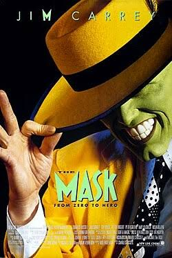
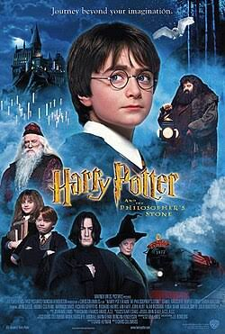
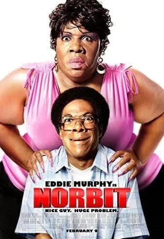

O Máscara (1994), dirigido por Chuck Russell e estrelado por Jim Carrey, é uma comédia de fantasia baseada nos quadrinhos da Dark Horse Comics que acompanha Stanley Ipkiss, um bancário tímido e azarado em Edge City. Sua vida muda drasticamente ao encontrar uma misteriosa máscara de madeira que contém a essência de Loki, o deus nórdico da trapaça; ao vesti-la, Stanley se transforma em um ser de rosto verde e terno amarelo capaz de alterar a realidade com habilidades dignas de um desenho animado. Livre de suas inibições, ele usa esses poderes para conquistar a cantora de boate Tina Carlyle (Cameron Diaz) e enfrentar o perigoso mafioso Dorian Tyrell, que tenta se apoderar do artefato para dominar a cidade. Diferente das HQs originais — que eram extremamente violentas e sombrias —, a adaptação optou por um tom leve inspirado nas animações de Tex Avery, consagrando-se como um imenso sucesso de bilheteria e um marco dos efeitos visuais nos anos 1990.

Harry Potter e a Pedra Filosofal (2001), dirigido por Chris Columbus e baseado no livro de J.K. Rowling, acompanha a história de Harry Potter, um garoto órfão que descobre em seu aniversário de onze anos que é um bruxo famoso por ter sobrevivido, ainda bebê, ao ataque do temido bruxo das trevas Lord Voldemort. Resgatado da casa dos seus tios negligentes pelo amável meio-gigante Hagrid, Harry é levado para a Escola de Magia e Bruxaria de Hogwarts, onde faz seus primeiros amigos verdadeiros, Rony Weasley e Hermione Granger. Conforme se adapta à vida acadêmica repleta de feitiços, poções e quadribol, o trio descobre que um valioso objeto mágico capaz de conceder a imortalidade — a Pedra Filosofal — está escondido no castelo e correndo o risco de ser roubado. Acreditando que o misterioso Professor Snape tenta obtê-la para ressuscitar Voldemort, Harry e seus amigos superam uma série de perigosos desafios mágicos para proteger o artefato, marcando o início da jornada do garoto no mundo da magia e consolidando o filme como um marco cultural global.

Donnie Darko (2001), escrito e dirigido por Richard Kelly, é um suspense psicológico e ficção científica cult que acompanha um adolescente perturbado chamado Donnie (Jake Gyllenhaal), que sofre de sonambulismo e visões. Uma noite, ele é atraído para fora de casa por Frank, uma figura macabra fantasiada de coelho gigante, que o salva de ser esmagado pela turbina de um avião que cai misteriosamente em seu quarto e profetiza que o mundo acabará em exatamente 28 dias. A partir daí, manipulado por Frank para cometer atos de vandalismo, Donnie começa a explorar conceitos de viagens no tempo, caminhos paralelos e destino enquanto lida com seus problemas mentais e tenta proteger sua namorada Gretchen e sua família. Conforme a contagem regressiva chega ao fim, Donnie descobre que habita um "Universo Tangente" instável e toma a decisão trágica de se sacrificar no loop temporal original para restaurar a realidade correta e salvar as pessoas que ama, transformando o longa em um dos maiores clássicos enigmáticos do cinema independente.

Breaking Bad (2008–2013), criada por Vince Gilligan, é uma aclama série de drama policial e suspense que acompanha Walter White (Bryan Cranston), um genial, porém frustrado professor de química do ensino médio que descobre um câncer de pulmão inoperável. Desesperado para garantir o futuro financeiro de sua família antes de morrer, ele decide usar seus conhecimentos científicos para produzir metanfetamina de altíssima pureza, aliando-se a Jesse Pinkman (Aaron Paul), um de seus ex-alunos e pequeno traficante local. Conforme sua operação se expande, Walter assume o pseudônimo de "Heisenberg" e mergulha em uma espiral irreversível de violência, ego e ambição no submundo do crime de Albuquerque, transformando-se de um pai de família pacato em um implacável e temido barão da droga enquanto tenta enganar seu próprio cunhado, Hank Schrader, um agente da DEA. Considerada uma das maiores obras-primas da televisão, a série explora de forma magistral as consequências morais e a gradual degradação humana trazidas pelo poder.

Norbit (2007) — frequentemente associado à sua vilã e co-protagonista Rasputia — é uma comédia politicamente incorreta dirigida por Brian Robbins e coescrita por Eddie Murphy, que interpreta três papéis no filme: o ingênuo Norbit, o rabugento Sr. Wong e a própria Rasputia. A trama acompanha a vida trágica e cômica de Norbit, um rapaz tímido e bondoso que, após ser abandonado em um orfanato quando bebê e ver sua grande paixão de infância (Kate) ser adotada, acaba sendo salvo do bullying por Rasputia. Dominadora, agressiva e extremamente vaidosa, Rasputia o força a engatar um relacionamento e, mais tarde, a se casar com ela, transformando a vida de Norbit em um inferno sob o controle abusivo dela e de seus intimidares irmãos. Tudo muda quando Kate (Thandie Newton) retorna à cidade para comprar o antigo orfanato, reacendendo os sentimentos de Norbit e fazendo com que ele encontre coragem para enfrentar a terrível esposa, desmascarar o noivo golpista de Kate e assumir o controle da própria vida. Impulsionado pelo impressionante trabalho de maquiagem prostética de Rick Baker (que rendeu ao filme uma indicação ao Oscar), o longa tornou-se um grande sucesso de bilheteria e um marco da cultura pop dos anos 2000 devido à figura extravagante e marcante de Rasputia.